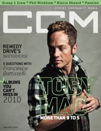

CMnexus
:
Contemporary Christian culture, music, and media.
Magazines
Profiles
Dove Awards
cmnexus.org
CM
nexus
→
Profiles
→
W
→
Andrea Bailey Willits
Andrea Bailey Willits
Writing credits listing
Apr 2005 in
CCM
27.10
"! Reading"
"! Technology"
May 2005 in
CCM
27.11
Fernando Ortega
-
Fernando Ortega
"A'postrophe Marks the Spot"
Grand Prize
,
Jaci Velásquez
,
Michael Cook
5 Questions With: Rob Beckley of
Pillar
Jul 2005 in
CCM
28.1
Mary Mary
-
Mary Mary
Aug 2005 in
CCM
28.2
"Seeking Justice"
Rita Springer
Truth Be Told: commercial endorsement deals for bands
Sep 2005 in
CCM
28.3
Get Real:
Ginny Owens
The Ambassador
-
The Thesis
"The Return of Rebecca The Rock Chick"
Rebecca Saint James
Oct 2005 in
CCM
28.4
"Home Sweet Home"
Ginny Owens
TobyMac
-
Renovating Diverse City
Nov 2005 in
CCM
28.5
5 Questions With:
Mary Mary
Dec 2005 in
CCM
28.6
Get Real:
Operation Christmas Child
J.R.
-
Metamorphosis
Jan 2006 in
CCM
28.7
Get Real:
Wes King
"Beautiful Days"
Sara Groves
Rebecca Saint James
-
If I Had One Chance To Tell You Something
Feb 2006 in
CCM
28.8
Cindy Morgan
-
Postcards
Jun 2006 in
CCM
28.12
Downhere
-
Wide-Eyed and Mystified
Jul 2006 in
CCM
29.1
Playdough
-
Don't Drink the Water
Jul 2009 in
YouthWorker
25.6
Sarah Reeves
-
Sweet Sweet Sound
Aug 2009 in
Christianity Today
53.8
Mat Kearney
-
City of Black & White

Jan 2010 in
CCM Digital
"All In A Day's Work"
TobyMac
CMnexus
(noun)
The magazine index
of modern music
and Christianity
© 2011 CMnexus. Last updated April 2021.
Contact:
Rants and other correspondence to:
editor -AT- cmnexus
-DØT- org
About